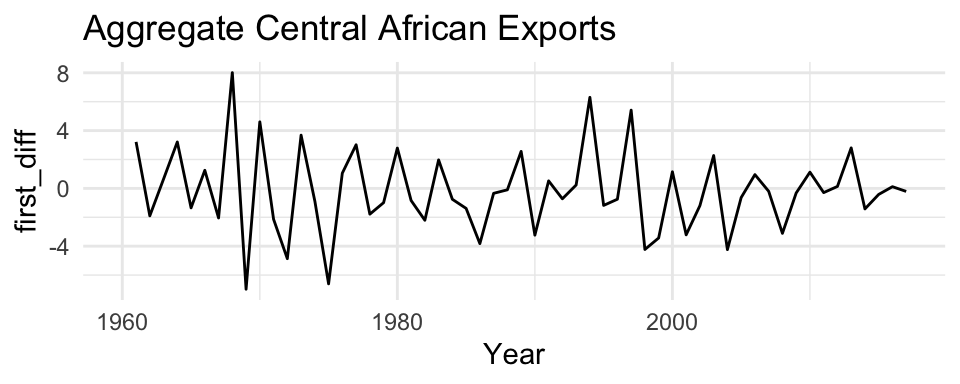
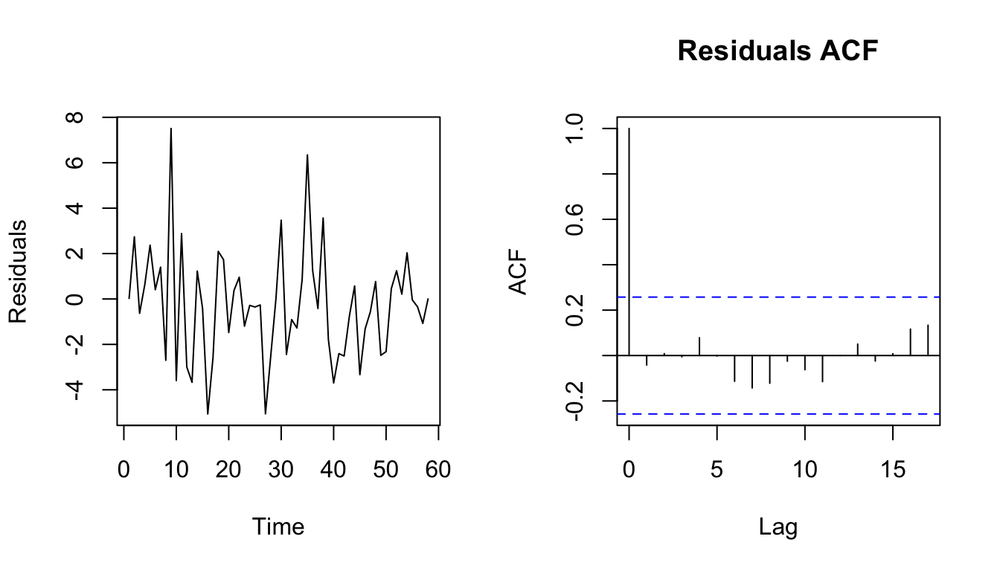
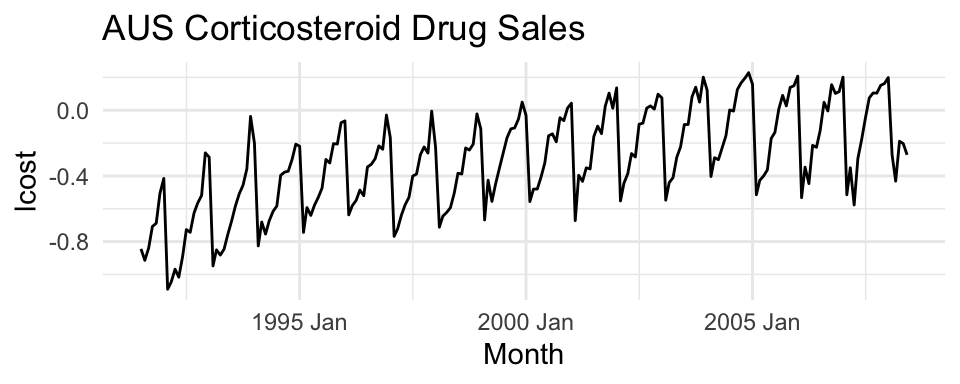
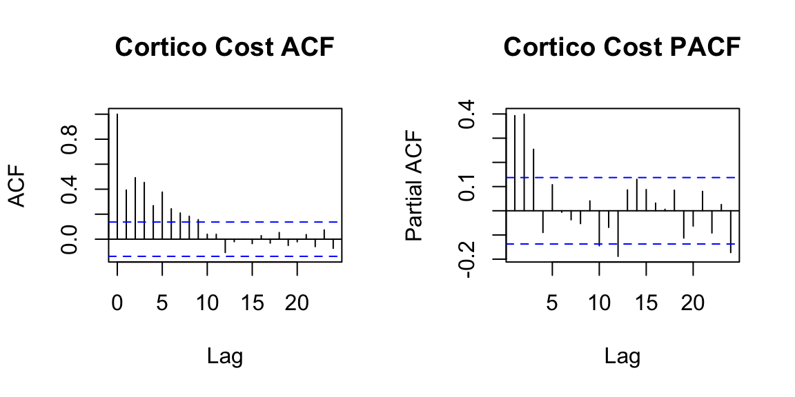

Set 4 ARIMA
4.1 Stationarity
The ARMA model we have seen assumes stationary data. Stationarity means ‘not changing in time’ in the context of time-series models. In a typical data analysis, however, we will not be assured that our data is stationary. Therefore, we need some methods to evaluate stationarity and also to deal with nonstationary data.
We will discuss 2 common approaches to evaluating stationarity:
- Visual test
- Unit Root Test (ADF)
4.1.1 Visual Test
The visual test is simply looking at a plot of the data versus time. Look for:
- Change in the level over time. Is the time series increasing or decreasing? Does it appear to cycle?
- Change in the variance over time. Do deviations away from the mean change over time, increase or decrease?
4.1.2 Unit Root Tests
One of the most common forms of non-stationarity that is tested for is that the process has a random walk component, such as \(x_t = x_{t-1} + e_t\). A random walk is called a ‘unit root’ process in the time series literature since it occurs when one of the roots of the AR polynomial is 1. A test for an underlying random walk is called a ‘unit root’ test.
4.1.3 Dickey Fuller Test (DF)
The DF tests for a unit root in the context of an AR(1) model, which can be written,
\[\begin{align} x_t &= \phi_1 x_{t-1} + w_t \\ \nabla x_t &= (\phi_1 - 1) x_{t-1} + w_t \\ &= \delta x_{t-1} + w_t \end{align}\]
This model can be estimated, and testing for a unit root is equivalent to testing:
\[\begin{align} H_0&: \delta = 0 \\ H_A&: \delta \neq 0 \end{align}\]
The test statistic has a specific distribution simply known as the Dickey–Fuller table, which is used to find the p-value. We want to reject the null hypothesis (small p-value) of non-stationarity.
4.1.4 Augmented DF Test
The Augmented Dickey-Fuller Test (ADF) looks for evidence that an AR(p) process has a unit root (an underlying random walk process).
The null hypothesis is that the time series has a unit root, that is, it has a random walk component.
The alternative hypothesis is some variation of stationarity.
The first difference, \(\nabla\), of the general AR(p) model can be re-written as,
\[\begin{align} \nabla x_t = \phi_1^\prime x_{t-1} + \sum_{i=1}^{p-1} \phi_{i+1}^\prime \nabla x_{t-1} + w_t, \end{align}\]
where
\[\begin{align} \phi_1^\prime &= \sum_{j=1}^{p} \phi_{j}-1 \\ \phi_j^\prime &= \sum_{j=1}^{p} \phi_{j}~\text{ for} j \geq 2 \end{align}\]
Our interest is on \(\phi_1^\prime\) since it is equal to 0 exactly when 1 is a root of the AR(p) polynomial. Therefore, the hypothesis test is,
\[\begin{align} H_0&: \phi_1^\prime = 0 \\ H_A&: \phi_1^\prime \neq 0 \end{align}\]
4.1.5 ADF: tseries::adf.test()
adf.test() in the tseries package will apply the Augmented Dickey-Fuller with a constant and trend and report the p-value. We want to reject the Dickey=Fuller null hypothesis of non-stationarity. When k=0, the Dickey-Fuller test asseses AR(1) stationarity. The Augmented Dickey-Fuller tests for more general lag-p stationarity.
adf.test(x, alternative = c("stationary", "explosive"),
k = trunc((length(x)-1)^(1/3)))In this lecture we will use differencing, the I in ARIMA model refers to differencing.
4.2 Differencing \(\nabla\)
Differencing means to create a new time series \(z_t = x_t - x_{t-1}\). The I in ARIMA model refers to differencing. First order differencing means you do this once (so \(z_t\)) and second order differencing means you do this twice (so \(z_t - z_{t-1}\)).
The diff() function takes the first difference:
## [1] 1 2 3 4The second difference is the first difference of the first difference.
## [1] 1 1 14.3 ARIMA Models
Our data is not always stationary. If the data do not appear stationary, differencing can help. This leads to the class of autoregressive integrated moving average (ARIMA) models. ARIMA models are indexed with orders (p,d,q) where d indicates the order of differencing.
\(\{x_t\}\) follows an ARIMA(p,d,q) process if \((1-\mathbf{B})^d x_t\) is an ARMA(p,q) process. In this context, \(p\) refers to the order of the autoregressive part of the model, \(d\) refers to the degree of differencing required, and \(q\) refers to the order of the moving average component.
4.3.1 ARIMA(1,1,1)
For example, consider an ARIMA(1,1,1).
- What is the response variable of the model?
- Write out the model equation.
- What would you expect the ACF and PACF plots to look like?
4.3.2 Real Data Example
Let us look at some real data - exports of the Central African Republic from 1960-2016. In this time series, we see a clear evolution in the mean of the time series, indicating that the time series is not stationary.
caf = tsibbledata::global_economy %>%
filter(Code == "CAF") %>%
mutate(first_diff = c(NA, diff(Exports)))
To address the non-stationarity, we will take a first difference of the data. The differenced data are shown below.

The DF test corresponds with a visual assessment - the first difference appears to be stationary.
4.3.3 Model Selection/ Fitting
To assess what kind of model to fit to the data, we can look at the ACF and PACF plots of the differenced data and diagnose some candidate models. For example:
The PACF above is suggestive of an AR(2) model; so an initial candidate model is an ARIMA(2,1,0). The ACF suggests an MA(3) model; so an alternative candidate is an ARIMA(0,1,3). We can fit both of these models and find which one has a better AIC score.
Arima(caf$Exports, order = c(2,1,0)) # -134.27 / 274.54
Arima(caf$Exports, order = c(0,1,3)) # - 133.12 / 274.25Since the AIC is smaller for the ARIMA(0,1,3) model, this is a good candidate. We could also search a larger space of models with the help of the auto.arima function.
4.3.4 Model Selection - automated
The general sequence of steps involved in fitting an ARIMA model to a given time series are:
- Evaluate whether the time series is stationary
- If not, make it stationary - select the differencing level (d)
- Select the AR level (p) and the MA level (q) that optimize the AIC
Steps two and three are automated with the function forecast::auto.arima function. For instance,
The model selected by this stepwise procedure is an ARIMA(2,1,2), whose AIC is 274.2, a small improvement over the AIC value of the ARIMA(0,1,3), which was selected by visual inspection of the ACF/ PACF plots.
4.3.5 Model Checking
4.3.5.1 Check the residuals
Residuals = difference between the observations (data), \(y\), and expected (fitted) values, \(\hat{y}\). Thus, the i’th residual is: \(y_i-\hat{y}_i\).
In R, we can obtain the vector of residuals using the residuals function.
 What do we aim to see in these plots? Do we?
We could alternatively use a hypothesis test (Box-Pierce test) in which:
\[\begin{align} H_0 &: \rho_1 = \rho_2 = \ldots = \rho_k = 0 \\ H_A &: \text{at least one autocorrelation is different from 0} \end{align}\]
The test statistic (the Ljung-Box Q-Statistic) for this test:
\[\begin{align} Q = n(n+2) \sum_{i=1}^k \frac{\hat{\rho}_i^2}{(n-k)} \end{align}\]
follows a chi-squared distribution with \(k\) degrees of freedom under the null hypothesis.
4.3.6 Forecasting
4.3.6.1 Point Estimates
The basic idea of forecasting with an ARIMA model is to estimate the parameters and forecast forward.
For example, let’s say we want to forecast Central African Exports with the ARIMA(2,1,0) model with drift: \[z_t = \mu + \phi_1 z_{t-1} + \phi_2 z_{t-2} + w_t\] where \(z_t = x_t - x_{t-1}\), the first difference.
Arima() would write this model:
\[(z_t-m) = \phi_1 (z_{t-1}-m) + \phi_2 (z_{t-2}-m) + e_t\] The relationship between \(\mu\) and \(m\) is \(\mu = m(1 - \phi_1 - \phi_2)\).
Let’s estimate the \(\phi\)’s for this model from the Central African export data.
## ar1 ar2 drift
## -0.5230284 -0.3065268 -0.2119722So, \(\mu=\) -0.39
So we can forecast with this model:
\(z_t =\) -0.39 + -0.52 \(z_{t-1}\) -0.31\(z_{t-2}\) + \(w_t\) To obtain the \(T+1\) forecast value:
zt_1 = 12.51809 - 12.72904
zt_2 = 12.72904 - 12.61192
12.51809 + (-0.3878149 -0.5230284 * zt_1 - 0.3065268 * zt_2)## [1] 12.20471You can also use the forecast function to obtain point estimates and prediction intervals. For example,
4.4 SARIMA
So far, we have restricted our attention to non-seasonal data and non-seasonal ARIMA models. However, ARIMA models are also capable of modelling a wide range of seasonal data. A seasonal ARIMA model is formed by including additional seasonal terms in the ARIMA models we have seen so far. It is written as follows:
\[ARIMA(p,d,q)~(P,D,Q)_m\] where \(m\) is the seasonal period (e.g., number of observations per seasonal period). We use uppercase notation for the seasonal parts of the model, and lowercase notation for the non-seasonal parts of the model.
The seasonal part of the model consists of terms that are similar to the non-seasonal components of the model, but involve backshifts of the seasonal period. The modelling procedure is almost the same as for non-seasonal data, except that we need to select seasonal AR and MA terms as well as the non-seasonal components of the model. Let us start by unpacking some simple SARIMA models.
4.4.1 Unpacking Notation
Consider the SARIMA model, ARIMA\((0,0,0)(0,0,1)_{12}\)
Write out the model equation
What is the theoretical variance of the model?
What is the theoretical autocorrelation function?
What would you expect to see in the seasonal lags of the PACF?
Consider the SARIMA model, ARIMA\((0,0,0)(1,0,0)_{12}\)
Write out the model equation
What is the theoretical variance of the model?
What is the theoretical autocorrelation function?
What would you expect to see in the seasonal lags of the PACF?
4.4.2 Data Example
To see how this looks with real data, we will try to forecast monthly corticosteroid drug sales in Australia. These are known as H02 drugs under the Anatomical Therapeutic Chemical classification scheme. Their primary application is the treatment of allergic reactions, and are therefore highly seasonal. The dataset is tsibbledata::PBS.
h02 <- PBS %>%
filter(ATC2 == "H02") %>%
summarise(Cost = sum(Cost)/1e6) %>%
mutate(lcost = log(Cost)) %>%
mutate(dlcost = c( rep(0,12),diff(lcost, 12)))
The data are strongly seasonal and obviously non-stationary, so seasonal differencing will be used. The seasonally differenced data are shown below. The differenced data appear somewhat stationary and the null hypothesis is rejected in the ADF test, so our response variable will be: \(z_t = x_t - x_{t-12}\).

Below we examine the ACF and PACF of \(z_t\).

In the plots of the seasonally differenced data, there are spikes in the PACF at lags 12 and 24, but nothing at seasonal lags in the ACF. This may be suggestive of a seasonal AR(2) term. In the non-seasonal lags, there are three significant spikes in the PACF, suggesting a possible AR(3) term. The pattern in the ACF is not indicative of any simple model. This initial analysis suggests that a possible model for these data is an ARIMA\((3,0,0)(2,1,0)_{12}\). We fit this model below:
Cost = ts(h02$Cost, frequency = 12, start = c(1991, 7))
m0 = arima(Cost, order = c(3,0,0), seasonal = c(2,1,0))
m0 %>% broom::tidy() %>% knitr::kable()| term | estimate | std.error |
|---|---|---|
| ar1 | 0.0985710 | 0.0701709 |
| ar2 | 0.3980094 | 0.0622226 |
| ar3 | 0.3897839 | 0.0724192 |
| sar1 | -0.4378022 | 0.0787779 |
| sar2 | -0.3047419 | 0.0782169 |
Let’s quickly examine the residuals from the model,
And then we can produce forecasts for the next 12 months.
4.5 Lab 3
- Consider
fpp3::aus_airpassengers, the total number of passengers (in millions) from Australian air carriers for the period 1970-2011.
- Plot the data. Are the data stationary? If not, find an appropriate transformation which yields stationary data.
- Plot the ACF and PACF of the transformed time series. What are one or two candidate models based on these plots?
- Use
forecast::auto.arima()to find an optimized ARIMA model. Use the original (i.e., nonstationary) time series as the input. What model was selected? Write the fit model equation. - Check that the residuals look like white noise.
forecast::checkresiduals - Plot forecasts for the next 10 periods.
forecast::forecast - Plot forecasts from an ARIMA(0,1,0) model with drift and compare these to the automatically selected model.
- Choose an employment type from
fpp3::us_employment, the total employment in different industries in the United States.
- Are the data stationary? If not, find an appropriate transformation which yields stationary data.
- Examine ACF and PACF plots of the transformed data (if this was necessary to attain stationarity) to identify a couple of ARIMA models that might be useful in describing the time series. Which of your models is the best according to their AIC values?
- Estimate the parameters of your best model and do diagnostic testing on the residuals. Do the residuals resemble white noise? If not, try to find another ARIMA model which fits better.
- Forecast the next 3 years of data. Get the latest figures from https://fred.stlouisfed.org/categories/11 to check the accuracy of your forecasts.
- Eventually, the prediction intervals are so wide that the forecasts are not particularly useful. How many years of forecasts do you think are sufficiently accurate to be usable?